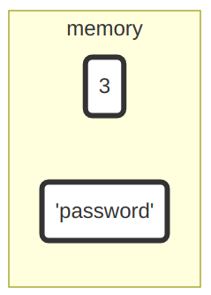
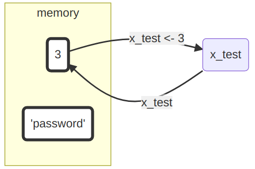
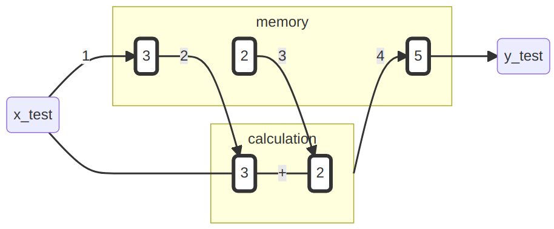
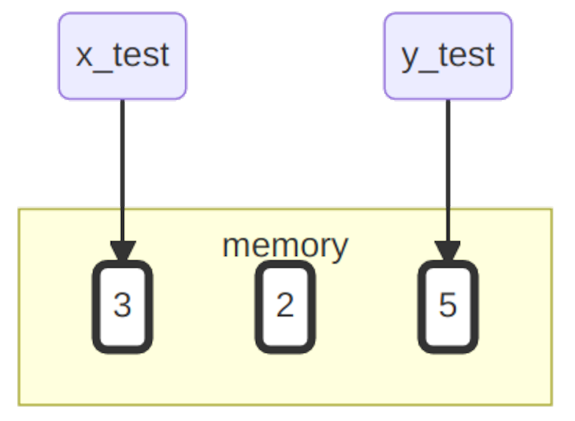
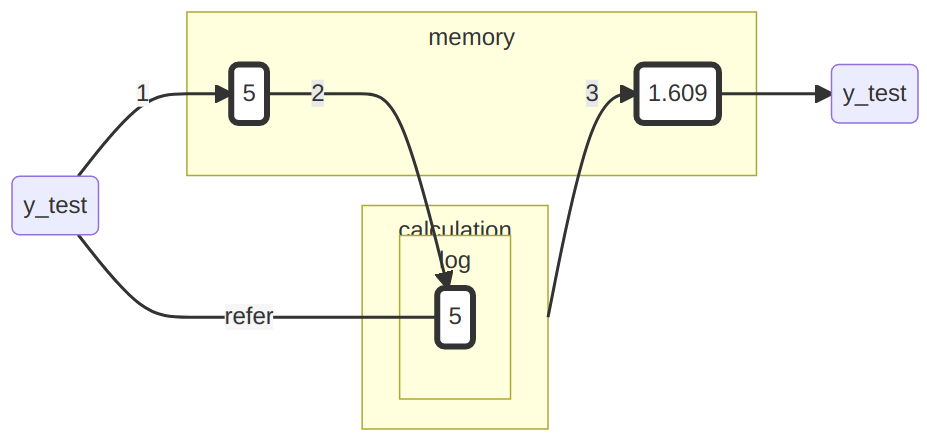

Chapter 3 Atomare Datentypen
=======Kapitel 3 Atomare Datentypen
>>>>>>> cb540add05f3f2b60c4e9c302b546d0ee77b6674 =======Chapter 3 Atomare Datentypen
>>>>>>> parent of ac04cbb (changed word usage for explaining objects and names)Datentypen sind die Grundlage einer jeder Programmiersprache und somit essenziell zum Verständnis dieser. Sie dienen dazu, verschiedene Typen unterscheiden. Etwa Zahlen von Buchstaben. Das ist besonders wichtig, da wir mit unterschiedlichen ‘Typen’ unterschiedliche Operationen ausführen, bzw. nicht ausführen, können. Zum Beispiel können wir mit Zahlen rechnen, mit Buchstaben hingegen nicht. Mit logischen Bedingungen können wir wiederum Wahrheitswerte ermitteln, mit Zahlen hingegen nicht. Zu wissen, welche Eigenschaften die verschiedene Datentypen haben und welche Operationen mit diesen möglich sind, hilft dabei vielen potenziellen Fehlern vorzubeugen und so Frustration zu vermeiden.
Zunächst einmal wollen wir uns die atomaren Datentypen anschauen. Diese bilden die Grundlage aller folgenden Datentypen.
| Datentyp | Beschreibung | Beispiel |
|---|---|---|
| integer | ganze Zahlen | -2L |
| numeric | reelle Zahlen | 5.2456 |
| logic | logische Werte | TRUE |
| character | Zeichenfolge | “Mexico” |
| NA,NULL,NaN | Unbestimmt, Leer, Undefiniert | |
| Inf | Unendlich |
Die numerischen Datentypen integer und numeric erlauben es uns numerische Informationen zu repräsentieren. Mit dem Datentyp logic können wir logische Informationen repräsentieren. Um symbolische Informationen zu repräsentieren, verwenden wir den Datentyp character. Mit numerischen-, logischen- und symbolischen Informationen ist es bereits möglich eine Vielzahl von Sachverhalten auszudrücken. Was dies sein kann, wollen wir uns im Folgenden anschauen.
3.1 Arithmetische Grundoperationen und Basisfunktionen
R beherscht für alle Zahlen die arithmetischen Grundoperationen und eignet sich somit wunderbar als Taschenrechner.
| Operation | Beschreibung | Beispiel |
|---|---|---|
+,- |
Addition, Subtraktion | 3-1.2 |
*,/ |
Multiplikation, Division | 4.8/4 |
^ |
Potenz | 5^2 |
Beispiel:
1+2## [1] 32*3.5## [1] 710.1^3## [1] 1030.301R vefügt für den Datentypen numeric über viele elementare Grundfunktionen.
Hier nur ein paar wenige relevante Beispiele:
| Operation | Beschreibung | Beispiel |
|---|---|---|
sqrt() |
Quadratwurzel | sqrt(9) |
abs() |
Absolutbetrag | abs(-12) |
log(),exp() |
Logarithmus und Expontentialfunktion | exp(3) |
round() |
Runden | round(2.12) |
sqrt(5)## [1] 2.236068log(3)## [1] 1.0986123.1.1 Funktionsaufrufe
Funktionen sind ein wichtiger Teil von R und werden syntaktisch durch eine öffnende und eine schließende Klammer gekennzeichnet, nach diesem Schema: funktion(). Gerade haben wir bereits eine Funktion ausgeführt, indem wir sqrt(9) aufgerufen haben. Ausführlich werden Funktionen noch in Kapitel 3 besprochen. Ein paar Grundlagen wollen wir hier aber schon einmal einführen:
Funktionensaufrufe erfolgen in der Regel über das Schema
Funktionsname(Argument 1, Argument 2, ...)
Beispiel: Die Funktion
signif(x,digits)
rundet eine Zahl x auf digits signifikante Stellen.
- Argumente haben zumeist einen festen Namen, sodass diesen eindeutig Werte zugewiesen werden können:
signif(x = 12.3456, digits = 3)## [1] 12.3- Alternativ können aufgrund der Position bzw. der Ordnung den Argumenten Werte zugewiesen werden:
signif(12.3456, 3)## [1] 12.33.1.2 Was wir bisher getan haben
“To understand computations in R, two slogans are helpful: Everything that exists is an object. Everything that happens is a function call.” (John M. Chambers) 2
- bis jetzt haben wir uns nur Funktionen angeschaut
- die Ergebnisse der Funktionen sind alle flüchtig und “existieren” somit nicht, da diese nicht an ein Objekt gebunden sind

Geben wir etwa die Zahl 3 oder die Zeichenkette "password" in die Konsole ein, bekommen wir dieselben Werte zurück. Diese wurden somit im Speicher angelegt. Allerdings können wir auf die Werte nicht mehr zugreifen. Wenn wir zum Beispiel erneut die Zeichenkette "password" benötigten, müssten wir sie erneut eintippen. Auf die bereits im Speicher existierende haben wir keinen Zugriff. Wie wir das ändern können und für uns ‘existierende’ Objekte erzeugen können, wollen wir uns nun anschauen.
3.2 Erzeugung von Objekten
Mit dem Operator <- lässt sich ein Objekt erstellen, welche aus einem Namen (x_test) und einem Wert (3) besteht:
x_test <- 3Der Wert dieses Objekts lässt sich über den Namen aus dem Speicher abrufen:
x_test## [1] 3Wenn wir
x_test <- 3ausführen, passiert formal eigentlich Folgendes:
- Es wird im Speicher ein Objekt mit Wert 3 erzeugt.
- Es wird der Name
x_testan dieses Objekt gebunden, sodass zu diesen Objekt mit dem Namenx_testreferiert werden kann bzw. bei Aufruf vonx_testder Wert zurückgegeben wird.

Über den Namen unseren neues Objektes können wir nun dauerhaft dessen Wert (3) abrufen.
3.2.1 Anmerkung Namen
Für Namen dürfen alle Buchstaben und Zahlen verwendet werden, sowie
die beiden Sonderzeichen _ und ., wobei diese nicht
am Anfang stehen dürfen.
Beispiel:
x_1 <- 3Aber:
_x_1 <- 3## Error: <text>:1:1: unexpected input
## 1: _
## ^Bemerkung: Man sollte sich bei den Buchstaben nur auf a,…,z bzw. A,.., Z beschränken, auch wenn je nach lokalem Setting z.B. auch andere Buchstaben wie ä zulässig sind.
3.2.2 Rechnungen mit Werten von Objekten
Befindet sich das Objekt im Speicher, so steht es für alle weiteren Berechnungen und Operationen zur Verfügung:
x_test + 2## [1] 5
Das Ergebnis bzw. der Wert eines solchen Ausdrucks lässt sich aber auch für spätere Zwecke einem neuen Objekt zuordnen:
y_test <- x_test + 2
y_test## [1] 5
Unser Speicher sieht aktuell so aus:

Zwar haben wir für die Berechnung auch eine Zwei im Speicher angelegt, diese ist aber nicht an ein Objekt gebunden. Die Drei und die Fünf hingegen schon. Wenn wir nun x_test und y_test aufrufen, bekommen wir jeweils den entsprechenden Wert zurück.
3.2.3 Objekte überschreiben
ACHTUNG! - Verwendet man den selben Objektnamen nocheinmal, geht die ursprüngliche Referenz verloren:
y_test <- log(y_test)
Wenn wir jetzt den Wert des Objekts y_test abfragen sehen wir folgendes:
y_test## [1] 1.609438Der ursprüngliche Wert des Objektes namens y_test steht uns nicht mehr zur Verfügung und somit unwiederbringlich verloren.

Führt man die Codezeile y_test <- log(y_test) jetzt noch einmal aus, so wird y_test wieder ein anderer Wert zugewiesen. Durch dieses Verhalten können wir nie sicher vorhersagen, welchen Wert y_test momentan hat. Deswegen sollte man immer neue Objektnamen vergeben und diese nicht doppelt verwenden.
3.2.4 Objekte löschen
Wir haben mittlerweile eine Menge Objekte im Speicher
angelegt. Mit ls() kann man diese abrufen:
ls()## [1] "x_1" "x_test" "y_test"Mit rm() kann man unnötige Objekte über deren Namen entfernen:
## [1] "alter_moni" "alter_tom" "name_bundeskanzler" "p" "q" "theendoftheworld"
## [7] "x_1" "x_test" "y_test" "z"Mit rm() kann man unnötige Objekte entfernen:
## [1] "alter_moni" "alter_tom" "name_bundeskanzler" "p"
## [5] "q" "theendoftheworld" "x_1" "x_test"
## [9] "y_test" "z"Mit rm() kann man unnötige Objekte entfernen:
rm(y_test)Wenn ihr gleich alle angelegten Objekte aus dem Arbeitsspeicher entfernen wollt:
rm(list = ls())3.3 Logische Werte und Operationen
Die Werte Wahr und Falsch werden in R mit TRUE und FALSE repräsentiert.
Es stehen die elementaren Boolschen Operationen zur Verfügung.
| Operator | Bedeutung |
|---|---|
! |
Negation |
& |
Und |
| |
Oder |
p <- TRUE
!p## [1] FALSEq <- FALSE
(p | q)## [1] TRUE3.3.1 Der “logische” Wert NA
Neben Wahr und Falsch existiert noch die logische Konstante NA, welche
für einen unbestimmten aber bestimmbaren Wert steht (not assigned, not available
yet).
Dieser Wert wird z. B. universell für alle atomaren Datentypen für die Codierung von Fehlwerten (missings) verwendet.
theendoftheworld <- NA3.3.2 Vergleichs-Operationen
Logische Werte spielen in R an verschiedenen Stellen eine große Rolle, da sie z.B. beschreiben, ob bestimmte Vergleiche wahr oder falsch sind.
| Operator | Bedeutung |
|---|---|
== |
Gleich? |
!= |
Ungleich? |
> / < |
Größer / Kleiner? |
>= / <= |
Größer / Kleiner gleich? |
alter_tom <- 21
alter_moni <- 24
alter_tom > alter_moni## [1] FALSE3.4 Zeichen (character)
Neben Zahlen und logischen Werten, werden wir auch Zeichenketten begegnen bzw. benötigen. Diese können auf zweierlei Art zugewiesen werden:
"Tom"## [1] "Tom"'Moni'## [1] "Moni"name_bundeskanzler <- "Olaf Scholz"
name_bundeskanzler## [1] "Olaf Scholz"3.5 Klasse eines Datenobjektes
Zur Erinnerung:
| Datentyp | Beschreibung | Beispiel |
|---|---|---|
| integer | ganze Zahlen | -2L |
| numeric | reelle Zahlen | 5.2456 |
| logic | logische Werte | TRUE |
| character | Zeichengfolge | “Mexico” |
| NULL,Inf,NaN | Leer, Unendlich, keine Zahl |
Die Klasse bzw. der Datentyp eines Objekts lässt sich
mit der Funktion class() ermitteln oder aber spezifisch/logisch prüfen.
class(alter_moni)## [1] "numeric"is.numeric(alter_moni)## [1] TRUE3.6 Spezielle Werte
Die leere Menge wird in R mit dem Wert NULL repräsentiert und dient ganz verschiedenen Zwecken wie z.B. Initialisierung einer Variablen:
z <- NULL
z## NULLDivision durch 0 ist “erlaubt” und liefert den speziellen Wert
Inf zurück.
100/0 ## [1] InfIn R wird ein nicht bestimmbarer Wert (vgl. unbestimmter aber bestimmbarer
Wert ‘NA’) durch NaN (not a number)
0/0
3.7 Prüfe dich selbst
=======3.7 Prüfe dich selbst
>>>>>>> cb540add05f3f2b60c4e9c302b546d0ee77b6674 =======3.7 Prüfe dich selbst
>>>>>>> parent of ac04cbb (changed word usage for explaining objects and names)Von dieser Sitzung solltest du folgendes mitgenommen haben:
- du solltest verstanden haben, warum man verschiedene Datentypen unterscheidet
- du solltest die drei Grundlegenden weisen Informationen zu repräsentieren nennen können und die dazugehörigen Datentypen
- du solltest verstanden haben wie man ein Objekt anlegt und wozu das nützlich sein könnte
- du solltest die elementaren Boolschen (logische) Operationen in R schreiben können